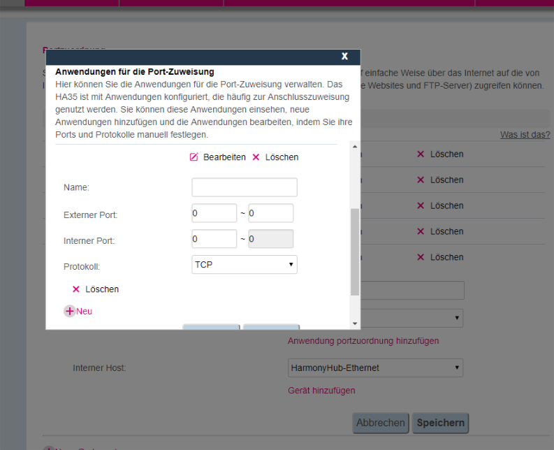

Guten Abend
Ich habe das Problem dass ich es nicht schaffe Portweiterleitungen auf meinem Huawei Ha35 Router für meine Synology einzurichten.
Die Anleitung auf der Tmobile Homepage war mir zu ungenau. Hier im Forum habe ich auch nicht wirklich etwas detailliertes gefunden.
Besteht die Möglichkeit dass mir jemand ausführlich weiterhilft? Am besten mit Bildern wo ich die Ports eintragen muss usw.
Vielen Dank schon mal im voraus
Zuerst eine öffentliche IP über die Hotline anfordern.
Die Anleitung ist ziemlich gut:
https://www.t-mobile.at/info-und-support/handyhilfe.php/device/homenet/hybrid-ha35-22/topic/sicherheit/portweiterleitung-einrichten
Wenn du nicht standard ports verwendet, muss du eine neue Anwendung definieren.
Siehe schritt sieben: Anwendung port Zuordnung hinzufügen
Bei aller Wertschätzung, Nein, das ist keine gute Anleitung. Gerade dieser Punkt ist extrem ungenau. Vielleicht für einen Profi verständlich aber nicht für einen Otto-Normaluser. Wie definiere ich das richtig?
Das wäre als lege ich dir alle Teile eines komplexen Motors hin und sage:" Jetzt nur noch zusammenbauen und sie können losfahren"
Auf die ganzen Felder die hier auszufüllen sind wird nicht mal irgendwie eingegangen. Was trag ich bei extern in 2?! Felder ein. von bis? oder wie? und was dann in die anderen? Muss ich den Router danach neustarten? oder nicht?
Seit 10 Jahren hab ich bei 3 unterschiedlichen Routern Portweiterleitungen einrichten müssen. und intuitiv und selbsterklärend war es noch nie. Und es war immer eine andere Logik dahinter. Ohne Community Anleitungen hätt ich es auch damals nicht geschafft. Darum habe ich eben hier um Hilfe gebeten.
")
Und wegen der öffentlichen IP. Kann ich nicht den DNS Service von Synology oder NOIP nutzen? Kostet eine öffentliche statische IP etwas? Oder verwechsel ich hier auch etwas?
Standardmäßig gibt es eine private IP von TMobile, welche man vom Internet nicht erreichen kann. Da hilft einem NOIP auch nicht weiter. Durch die dynamische Öffentliche IP, hat man eine, die man vom Internet aus erreichen kann. Da kann man auch NOIP und co verwenden.
Soweit ich weiß, kostet diese nichts.
Ich kenne die Unterseite Anwendungport Zuordnung hinzufügen nicht, könntest du bitte einen Screenshot davon Posten.
Vielen Dank für die Hilfe. ICh werde am Abend einen Screenshot posten.
Die öffentliche IP hab ich einstweilen freischalten lassen. Obwohl das war nicht einfach. Hat 3 Anrufe gekostet bis wer wusste was ich will.
Sorry die Verspätung.
Hier der Screenshot. Einstweilen hab ich es auch hinbekommen. Ich habe einfach in alle Felder die gleiche Portnummer eingetragen
Danach auf SPEICHERN, und bei der Anwendung dann den neuen Eintrag auswählen.
Möchte mich auch noch entschuldigen. Habe das mit der öffentlichen IP vergessen. Ohne die Freischaltung funktioniert auch das Portforwarding nicht.
Die Anleitung auf der Homepage find ich trotzdem noch etwas zu schlicht gehalten. ich finde man sollte noch im Detail darauf eingehen wo was eingetragen gehört UND dass man sich eben die IP umstellen lassen muss.
schönen Abend noch
Christian

Ich habe die Anleitung auch als nicht zu gebrauchen empfunden. Ich habe selbst gebastelt. Ich habe für OpenVPN den Port 1194 frei geschaltet.
Das geht prinzipiell einfach. Bei interner Port und externer Port das selbe eintragen und (in meinem fall) UDP als Protokoll auswählen. Name vergeben und Speichern. Danach den Router Sicherhaltshalber neustarten und nachschauen ob er es wirklich übernommen hat. Fertig ist die ganze gschichte.
DDNS kannst du dann erst eintragen wenn du eine Öffentliche IP adresse hast. Ich finde eine Beantragung könnte man ruhig in der Mein T-Mobile app veranlassen
{kind=link}